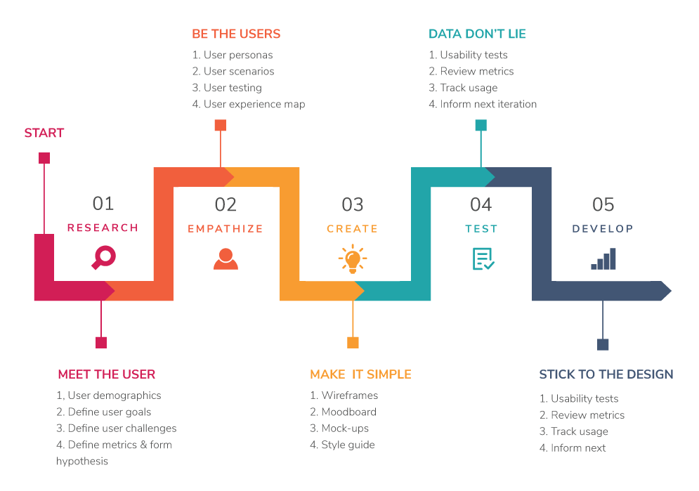

Accessibility 101
Essential for some, useful for all!
Today’s flow
- Why I’m here
- What is a Accessbility
- Who needs it
- Access strategies
- Takeaways
About me

Why?
Create
When?
How?
- Ask
- Align test session with appropriate dev
- Roster devs
- Turn them into observers and/or note taker
- Share findings with the team
Why not simply share finding?
It’s an investment in your developers, and the team
UX is a journey
Best experience for developers
=
Best experience for users
What next?
UXer, go talk to your devs
Devs, ask to be involved
Title
Tweet me @PraeSongprasit